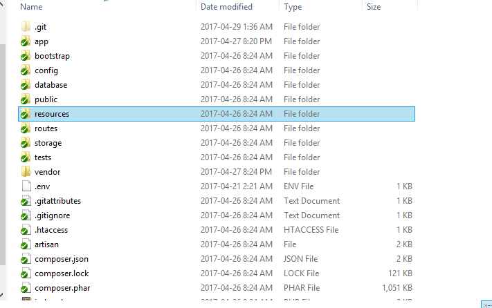
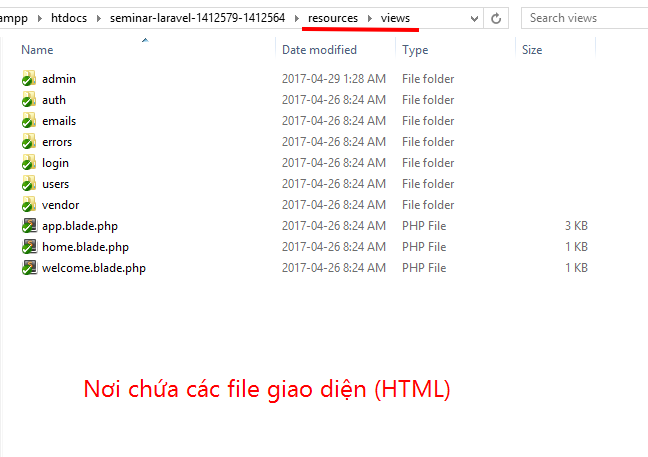
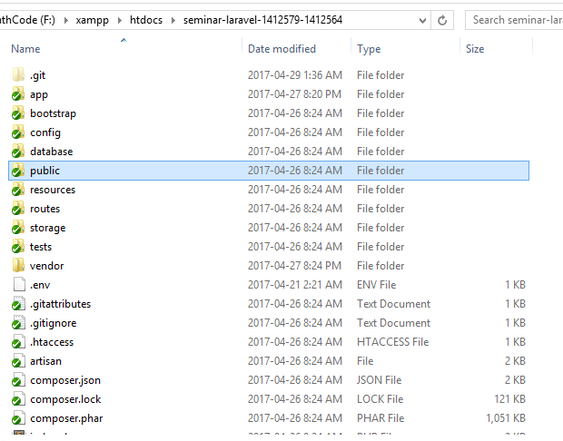
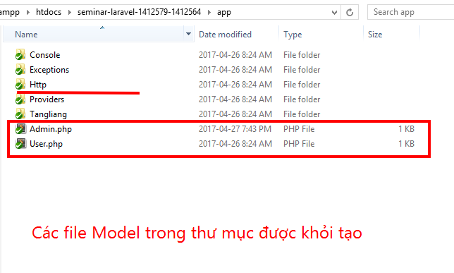
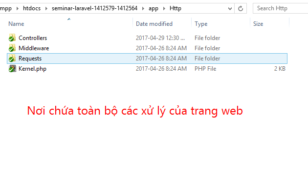

Model View Controller
MVC trong Laravel Framework
Giới thiệu về MVC
Điều đầu tiên nói đến đó chính là mô hình MVC, đây là mô hình phổ biến mà hầu hết các framework đều sử dụng, ngoài ra chúng ta còn có thể nhắc đến CodeIgniter, sử dụng MVC - một mô hình nâng cấp từ MVC
MVC là mô hình 3 lớp với ba thành phần chính:
- Model là nơi chưa các nghiệp vụ logic, các phương thức thức xử lý, tuy nhiên đa phần model là nơi chúng ta sử dụng để truy xuất database
- View là hiển thị các giao diện của website dựa vào hành động của người dùng, là chính các file HTML của chúng ta. Trong Laravel cũng có một thư mục view riêng.
- Controller chính là nơi nhận request của người dùng, từ đó có thể gửi lệnh cho Model hoặc View tùy vào request của người dùng
Có thể hiểu dễ hơn, Controller chính là nơi nhận lệnh từ người dùng, nếu người dùng thực hiện yêu cầu phải truy xuất xuống database, khi đó Controller sẽ gửi lệnh xuống Model, Model thực hiện yêu cầu của Controller sau đó lại ngược lại Controller, Controller nhận được dữ liệu và chuyển về View, từ đó View sẽ gửi thông tin dạng giao diện cho người dùng. Ngoài ra nếu yêu cầu không liên quan tới database thì Controller sẽ chuyển hướng thẳng về view mà không cần gửi lệnh cho Model. MVC giúp cho chúng ta quản lý mã nguồn dễ hơn, dễ nâng cấp và bảo trì source code của mình, tạo ra một chuẩn giúp cho teamwork tốt hơn, thống nhất trên một khuân khổ, tránh tình trạng "râu ông này cắm cằm bà kia" khi nhiều người code một project, và nhiều hơn thế nữa
MVC trong Laravel Framework

Trong Laravel, chúng ta hãy chú ý tới những thư mục được Laravel tạo sẵn, nơi mà chúng ta sẽ thực hiện đúng mô hình MVC.
- Thư mục resources: Đây là thư mục nơi mà chúng ta chứa các file giao diện, cụ thể là sẽ nằm trong thư mục view, Laravel cung cấp cho chúng ta thao tác gọi view rất đơn giản, nó được mặc định trong Laravel nên chúng ta không cần phải cấu hình một đường dẫn link tới thư mục này. Ngoài ra còn có các thư mục khác dùng để upload file, hoặc chứa thông tin giao diện đa ngôn ngữ và nơi chưa các file Front-end (tuy nhiên đa phần chúng ta đều để các file Front-end tại thư mục Public)
 
-
Thư mục public: đây là thư mục đúng nghĩa như cái tên của nó, public là nơi ta chứa các file cần thiết, chả hạn như đối với mình thì đây là nơi mình sử dụng để chứa các file CSS, JS, và một số hình ảnh upload được mình lưu tại đây.
 -
Thư mục app - nơi chưa đựng những gì tinh tuý nhất trong Laravel: quả thật vậy, đây chính là nơi nòng cốt của cả trang web, trong thư mục này, chúng chứa toàn bộ những những xử lý của chúng ta thông qua Http\Controller cũng như chứa các file Model giúp chúng ta thao tác cơ sở dữ liệu. Ngoài ra nó còn chứa các file Request - nơi chúng ta có thể sử dụng Validation mà Laravel cung cấp sẵn cũng như middleware giúp chúng ta thiết lập Authentication cho ứng dụng.
 